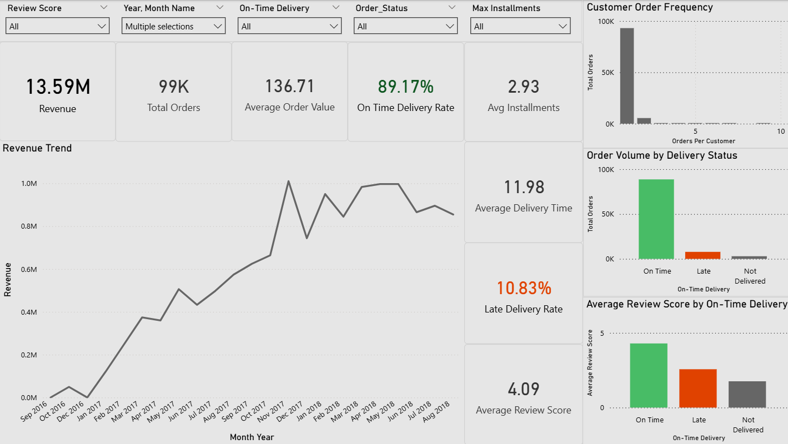
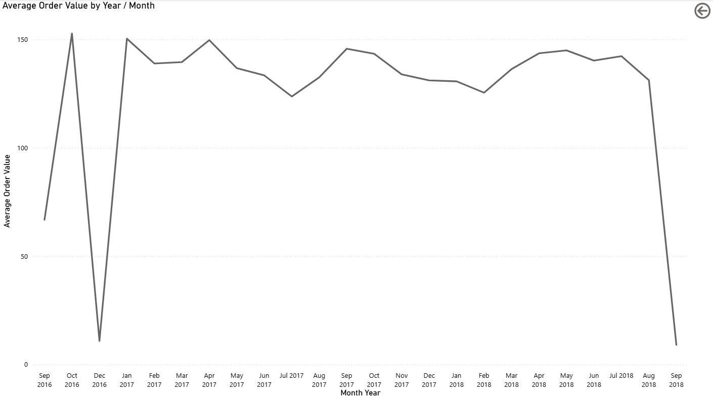
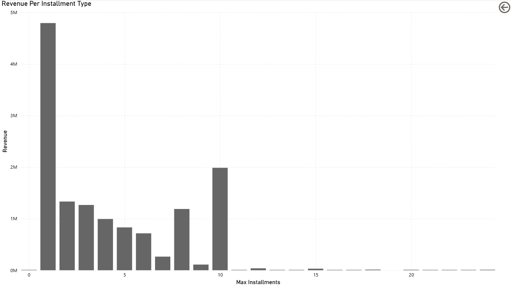

Data Modeling
Built a clean Power BI model from relational Olist tables including orders, order items, payments, reviews, and customers.
Portfolio Case Study
A Power BI dashboard project built using the Brazilian Olist dataset to analyze revenue growth, delivery performance, customer satisfaction, and customer purchasing behavior through an executive overview and supporting detail pages.
Overview
This project was designed to simulate a real client-facing dashboard engagement. The goal was to build a business-ready reporting solution that gives stakeholders a fast executive snapshot while also allowing deeper exploration of the most important metrics.
The final deliverable includes a main dashboard page focused on revenue, delivery, and customer experience, along with KPI-driven detail pages that expand key trends such as average order value, review score, and installment-based revenue patterns.
Business Problem
E-commerce teams often have access to large amounts of transactional data, but struggle to connect sales performance, operational reliability, and customer satisfaction into one usable reporting layer.
This dashboard was built to answer a focused set of business questions:
Approach
The project started with a structured intake workflow: identifying table grain, key relationships, business questions, and priority metrics before moving into dashboard design.
Built a clean Power BI model from relational Olist tables including orders, order items, payments, reviews, and customers.
Created business-focused KPIs for revenue, order volume, average order value, delivery timing, review score, and installment behavior.
Designed an executive overview page with focused visuals and KPI-triggered detail pages for deeper trend analysis.
Used Power BI table validation and a simple Python audit script to check for null issues and duplicate rows during intake.
Main Dashboard
The main page provides a high-level performance view across revenue, operations, and customer experience.

Detail Views
KPI-linked detail pages were added to support deeper inspection of trend behavior without overcrowding the main dashboard.



Key Insights
Tools Used
Data modeling, DAX measures, visual design, interaction flow, and detail-page navigation.
Data typing, cleanup, and table preparation during initial intake.
Basic dataset audit scripting for null and duplicate checks during workflow development.
Outcome
This case study demonstrates the ability to take a multi-table business dataset from intake and modeling through metric design, dashboard structure, interaction design, and business interpretation.
It reflects the type of reporting work used in real consulting engagements: practical, decision-oriented, and built to balance executive simplicity with analytical depth.